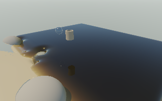
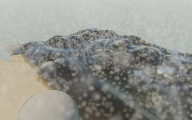

November 14, 2026 · AMD Radeon Pro 560X · Metal · Deno 2.9.8
Repaired the in-flight occlusion path. If a window becomes covered while a frame awaits shader/pipeline preparation, finish that frame into one temporary image, release it, and suspend subsequent frames until visible. Visible frames still draw directly to the window, with no new copy or shader pass. The 60 FPS cap, one outstanding frame, completion guards and one visible-surface reconfigure retry remain.
The previous frame-27 failure recorded macOS status [1,8192,0,1,640,400,927,640]. The visible bit is 2; the window was covered. The existing 8 ms event pump paused future callbacks, but could not prevent a frame already awaiting preparation from trying to acquire a window image. A new test injects that exact ordering into the production renderer’s flush method and verifies it completes its CPU work without acquiring or presenting a window image.
Deno’s pinned surface implementation maps all unsuccessful acquisition statuses to the same Invalid Surface Status message. This trace does not prove a shader or device failure, nor identify every past failure. The fix checks fresh visibility before acquisition and after that specific error; unrelated errors and repeated failures while visible still propagate. Reports now separate renderer failures from a device-lost event.
| Check | Result |
|---|---|
| Targeted numerical / lifecycle / scheduling tests | 76 passed; including field invariants, completion ordering, bounded retries, allocation lifetime and the async occlusion race. |
| Real GPU tiny window check | 24 alternating frames passed: 12 window images and 12 temporary images. Clear/readback within one byte; no reconfigure, validation error or device loss. |
| Full scene with injected visibility | Exact frozen-image equality when hidden and restored, followed by 24 fixed physics steps. Nine temporary images, zero bytes retained. This uses real GPU rendering with stand-in offscreen window targets; it is not OS minimize/restore automation. |
| Ordinary native window playback | 96 frames completed with rain, wind, glass, a cup and carved sand. 109 images presented including startup; zero reconfigures, no renderer failure or device loss. |
| Builds | Browser build passed · native build passed. |
Two optional 60-second OS-interaction probes did not complete a hide/restore cycle. The first observed the window become covered and finished hidden frames without an error; it was not uncovered before the deadline. The second remained visible (raw result). Native UI automation could not bind the unbundled executable. These are incomplete interaction checks, not GPU failures. Actual OS restoration, resize/display switching, long sessions and Windows/RTX still need broader validation. No restart or driver reset was requested.
The 96-frame validation run used a 640 × 400 native window, fixed 320 × 200 scene rendering, resolution 1.4 / 3,024 water markers, CPU/Wasm bulk physics and GPU rendering/fine particles. Wind 12, rain 120, two spawned bodies plus three fixture boulders, and one carve. After discarding 16 warmup frames: 5.42 FPS, 0.722× realtime, 209 ms p95 frame interval, across 79 presented intervals. The numerical tests finished during startup; no second GPU workload ran concurrently. This is a stability validation, not an A/B speedup claim.
On a hidden 640 × 400 frame the extra image peaks at 1,024,000 bytes, then returns to zero. The normal windowed run allocated none. The temporary allocation uses the same format and is bounded to the host’s existing 1920 × 1080 maximum. It is not an additional persistent framebuffer or a route around genuine device errors.
Frozen full scene before/hidden/restored: maximum linear RGB difference 0.

End of the ordinary windowed run, with wind and rain active:

npm run test:native npm run build:native # Run these sequentially; each ends automatically. .native/tools/deno run --config native/deno.json --allow-read --allow-write=.native --allow-env --allow-sys --allow-ffi native/surface-lifecycle-check.js .native/tools/deno run --config native/deno.json --allow-read --allow-write=.native --allow-env --allow-sys --allow-ffi native/presentation-check.js .native/tools/deno run --config native/deno.json --allow-read --allow-write=.native --allow-env --allow-sys --allow-ffi native/presentation-check.js --window
Use deno.exe on Windows. Results go to .native/surface-lifecycle/. Historical scene tests, shaders, materials and physics implementations were not edited. Next performance target: profile and batch CPU field deposition/transfer/transport; this host repair makes those future measurements less vulnerable to occlusion interruptions.